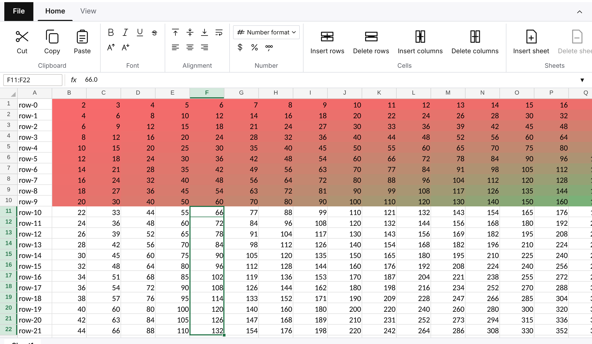
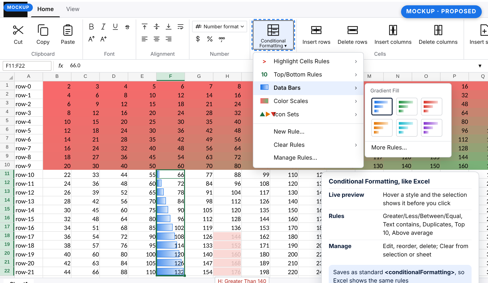
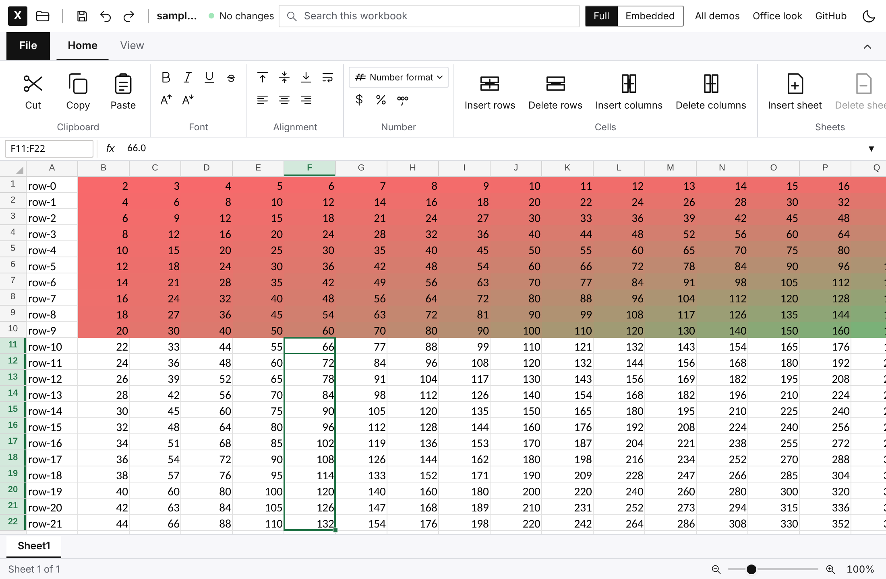
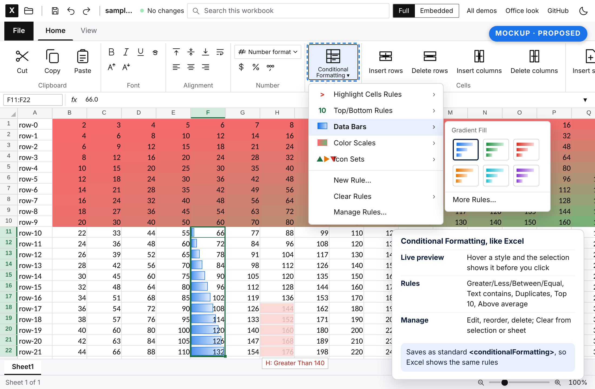

Conditional Formatting: data bars, colour scales and highlight rules, with live preview
Approved 2026-11-24 (👍). Queued for the nightly build behind host-API priority work and #612.
Approve: tap 👍 on the issue · Decline: tap 👎
Close-up of the change




Full screen


Today (F11:F22 selected): Nitro already paints conditional formats that come in the file (the red-to-green colour scale on rows 1–10), but the Home tab has no way to add, change or remove one.


Mockup: a Styles group on Home with Conditional Formatting. Hovering Data Bars › blue previews bars on the selection; a 'Greater Than 140' highlight rule shades column H. Rules save as standard Excel conditional formatting.
Tap an image to open it full size.
Why
Conditional formatting is how people actually read a sheet of numbers: outliers in red, a heat map, bars that show size at a glance. Excel, Google Sheets, OnlyOffice and Collabora all have it on the main toolbar. Nitro already renders these rules when a file has them, so adding the authoring side mostly means writing the same XML the painter already reads.
Definition of done
- Home > Styles has Conditional Formatting with Highlight Cells Rules, Top/Bottom Rules, Data Bars, Color Scales, Icon Sets, New Rule…, Clear Rules and Manage Rules…
- Hovering a preset previews it on the selection; clicking applies it as one undo step; Clear Rules works on selection and whole sheet.
- Manage Rules lists rules for the selection/sheet with edit, delete and reorder; rules that came in the file are shown and preserved.
- Saved files contain standard conditionalFormatting/cfRule XML and reopen in Excel and LibreOffice with the same look; untouched rules round-trip byte-identical.
- Playwright tests cover each preset family, preview, undo, clear and save round-trip; Font, Alignment and Number groups stay at two rows; bundle-budget and all required checks green.
Approve: tap 👍 on the issue · Decline: tap 👎